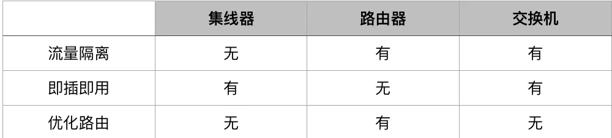

一、链路层提供的服务
1、成帧。在每个网络层数据报经链路传送之前，几乎所有链路层协议都要将其用链路层帧封装起来。
2、链路接入。媒体访问控制(Medium Access Control, MAC)协议规定了帧在链路上传输的规则。
3、可靠交付。保证无差错地经链路层移动每个网络层数据报。
4、差错检测和纠正。当帧中的一个比特作为1传输时，接收方结点中的链路层硬件可能不正确地将其判断为0，反之亦然。这种比特差错是由信号衰减和电磁噪声导致的。
二、差错检测和纠正技术
差错检测和纠错技术越复杂，导致的开销就越大，这就是意味着需要更多的计算量及更多的差错检测和纠错比特。
2.1、三种检测差错的技术：
- 奇偶校验（一维奇偶校验十分简单，但未检出差错的几率较高；二维奇偶校验可检测差错，还可以纠正差错）
- 检验和方法（与运输层的检验和方法类似）
- 循环冗余检测(Cyclic Redundancy Check, CRC)
2.2、两种类型的网络链路
1、点对点链路。由链路一端的单个发送方和链路另一端的单个接收方组成。许多链路层协议都为点对点链路设计，如点对点协议(point-to-point protocol, PPP)和高级数据链路控制(high-level data link control, HDLC)协议。
2、广播链路。能够让多个发送和接收结点都连接到相同的、单一的、共享的广播信道上。广播信道通常用于局域网中。
三、多路访问问题
协调多个发送/接收点对一个共享广播信道的访问，避免碰撞，有如下几种协议：
（1）信道划分协议：时分、频分、码分等，采用时分多路复用(TDM)和频分多路复用(FDM)
（2）随机接入协议：碰撞后，重发该帧前等待一个随机时延，有以下几种(时隙ALOHA,ALOHA,载波侦听多路访问(CSMA)具有碰撞检测的载波侦听多路访问(CSMA/CD))
例如CSMA载波侦听多路访问协议，节点在传播前先侦听信道，直到检测到一小段时间内没有信号传输，然后再开始传输，如果检测到碰撞就停止传输，继续侦听。
（3）轮流协议：【1】轮询协议，有一个主节点，轮询每个节点 【2】令牌传递协议，无主节点
1、信道划分协议。采用时分多路复用(TDM)和频分多路复用(FDM)，在所有共享信道的结点之间划分广播信道带宽的技术。
2、随机接入协议。一个传输结点总是以信道的全部速率进行发送、当有碰撞时，涉及碰撞的每个结点反复地重发它的帧(也就是分组)，到该帧无碰撞地通过为止。在重发涉及碰撞的帧之前，会等待一个随机时延。涉及碰撞的每个结点独立地选择随机时延。随机接入协议又有以下几种：
四、链路层地址
为什么我们在网络层和链路层都需要地址呢？
- 局域网是为任意网络层协议而设计，而不只是用于IP和因特网。
- 如果适配器使用网络层地址而不是MAC地址，网络层地址必须存储在适配器的RAM中，并且在每次适配器移动(或加电)时要重新配置。
主机和路由器中的适配器(即网络接口)具有链路层地址。要注意的是，链路层交换机没有链路层地址，因为它的任务是在主机与路由器之间承载数据报，它透明地执行该项任务，主机或路由器不必明确地将帧寻址到其间的交换机。
链路层地址有几种不同的称呼：
1、LAN地址
2、物理地址
3、MAC地址
大多数局域网，MAC地址长度为6字节。尽管MAC地址被设计为永久，但可以做到用软件改变一块适配器的MAC地址。没有两块适配器具有相同的MAC地址。
4.1、地址解析协议(Address Resolution Protocol, ARP)
ARP将一个IP地址解析为一个MAC地址。在很多方面它和DNS类似，DNS将主机名解析为IP地址。
它们之间的重要区别是：DNS为在因特网中任何地方的主机解析主机名，而ARP只为在同一个子网上的主机和路由器接口解析IP地址。
每台主机或路由器在其内存中有一个ARP表，包含IP地址到MAC地址的映射关系。如果一台主机要发送一个数据报到子网中的另一台主机，发送方需要获得给定IP地址的目的主机的MAC地址，如果发送方ARP表具有该目的结点的表项，这个任务很容易完成了如果没有，发送方会向它的适配器传递一个ARP查询分组，并且指示适配器应该用MAC广播地址(即FF-FF-FF-FF-FF-FF)来发送这个分组。
ARP协议需要注意的两件事
1、查询ARP报文是在广播帧中发送的，而响应ARP报文在一个标准帧中发送
2、ARP是即插即用的，意思是一个ARP表是自动建立的，它不需要系统管理员来配置。并且如果某主机与子网断开连接，它的表项最终会从留在子网中的结点的表中删除掉。
4.2、以太网
以太网帧结构
- 前同步码(8字节)。前同步码的前7个字节值都为10101010，最后一个字节为10101011。前7个字节用于“唤醒”接收适配器，并且将它们的时钟和发送方的时钟同步。
- 目的地址(6字节)。目的适配器的MAC地址。
- 源地址(6字节)。源适配器的MAC地址。
- 类型(2字节)。该字段允许以太网复用多种网络层协议。要记住主机能够使用除了IP以外的其他网络层协议。
- 数据(46~1500字节)。承载IP数据报。以太网最大传输单元(MTU)为1500字节，如果超过1500字节，主机必须将该数据报分片。数据字段的最小长度为46字节，少于则被填充到46字节。
- CRC(4字节)。循环冗余检测字段，检测帧是否引入了差错。
所以以太网技术都向网络层提供无连接服务。即适配器A向适配器B发送数据报时不需要先与适配器B“握手”。这种无连接服务类似于IP的第三层数据报服务和UDP的第四层无连接服务。
4.3、链路层交换机
交换机的过滤和转发
1、过滤是决定一个帧应该转发到某个接口还是应当将其丢弃
2、转发是决定一个帧应该被导向哪个接口，并把该帧移动到那些接口
链路层交换机的过滤和转发功能借助于交换机表。转发分组基于MAC地址。
4.4、链路层交换机的自学习
1、交换机表初始为空
2、当在每个接口接收到的每个入帧，该交换机在其表中存储：（1）在该帧源地址字段中的MAC地址（2）该帧到达的接口（3）当前时间。
3、如果在一段时间内，交换机没有接收到以该地址作为源地址的帧，就在表中删除这个地址。
链路层交换机是全双工的，任何交换机接口能够同时发送和接收。
4.5、链路层交换机和路由器的比较
1、交换机
优点：
（1）即插即用
（2）相对高的分组过滤和转发速率
缺点：
（1）为了防止广播帧的循环，交换网络的活跃拓扑限制为一棵生成树
（2）一个大型交换网络要求在主机和路由器中有大的ARP表，这将生成可观的ARP流量和处理量
（3）对广播风暴不提供任何保护措施，如果某主机出了故障并传输出没完没了的以太网广播帧流，该交换机将转发所有这些帧，使得整个以太网崩溃
2、路由器
优点：
（1）网络寻址通常是分层次的(不像MAC寻址是扁平的)。即使网络中存在冗余路径时，分组通常也不会通过路由器循环。所以，分组不会被限制到一棵生成树上，并可以使用源和目的地之间的最佳路径。因为没有生成树的限制，所以它们允许以丰富的拓扑结构构件因特网，如包括欧洲和北美之间的多条活跃链路
（2）对第二层的广播风暴提供了防火墙保护
缺点：
（1）不是即插即用
（2）对每个分组的处理时间通常比交换机更长

4.6、虚拟局域网
上述的局域网有三个缺点
1、缺乏流量隔离
2、交换机的无效使用
3、不方便管理用户
支持VLAN的交换机允许经一个单一的物理局域网基础设施定义多个虚拟局域网。在一个VLAN内的主机彼此通信，仿佛它们与交换机相连。